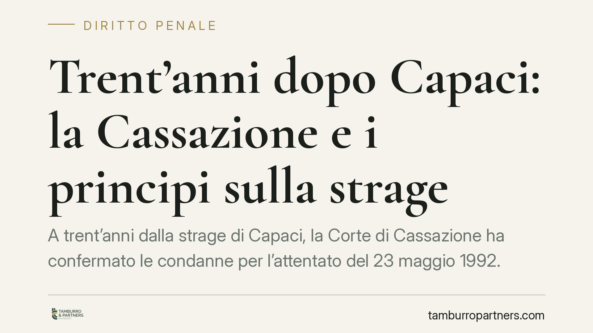

Trent'anni dopo Capaci: la Cassazione e i principi sulla strage
A trent'anni dalla strage di Capaci, la Corte di Cassazione ha confermato le condanne per l'attentato del 23 maggio 1992. La pronuncia è un punto fermo tecnico prima ancora che simbolico: ribadisce come si costruisce la responsabilità concorsuale di mandanti e organizzatori nel delitto di strage e traccia con nettezza il confine tra giudizio di merito e sindacato di legittimità.

Il fatto e la pronuncia
La strage di Capaci, in cui persero la vita il giudice Giovanni Falcone, la moglie Francesca Morvillo e tre agenti della scorta, ha generato uno dei filoni processuali più lunghi della storia giudiziaria italiana. A distanza di trent'anni la Corte di Cassazione è tornata a pronunciarsi, respingendo i ricorsi degli imputati e confermando l'impianto delle condanne di merito.
Nota di verifica. Gli estremi esatti della pronuncia — Sezione, data di deposito e numero di sentenza — vanno confermati sulla banca dati ufficiale prima di ogni citazione formale. Le decisioni di legittimità sui reati associativi mafiosi e sui delitti-fine sono storicamente riconducibili alla Prima Sezione Penale; l'indicazione va riportata come *Cass. pen., Sez. ___, sent. n. ___/____* e riscontrata puntualmente. Non citare mai una sentenza senza numero e sezione confermati.
Inquadramento normativo
Il reato contestato è la strage, prevista dall'art. 422 del codice penale. La norma punisce chi compie atti diretti a portare pericolo per la pubblica incolumità al fine di uccidere. Si tratta di un reato di pericolo comune sorretto da dolo specifico: non basta la coscienza e volontà dell'azione pericolosa, occorre che l'agente agisca con la finalità di provocare la morte di persone. Se dall'atto deriva la morte anche di una sola persona, la pena è l'ergastolo.
Sul piano della responsabilità dei mandanti e degli organizzatori entra in gioco l'art. 110 c.p., che disciplina il concorso di persone nel reato. La norma consente di attribuire il fatto non solo agli esecutori materiali, ma a chiunque abbia fornito un contributo causalmente rilevante alla sua realizzazione: chi decide, chi pianifica, chi coordina risponde del delitto al pari di chi preme il pulsante. Nei processi di criminalità organizzata questa è la chiave che consente di risalire dai gregari al vertice dell'associazione.
I limiti del sindacato di legittimità
Il passaggio tecnicamente più rilevante riguarda i confini del giudizio di Cassazione. I motivi di ricorso sono elencati in modo tassativo dall'art. 606 c.p.p.: violazione di legge sostanziale o processuale (lett. b e c), inosservanza di norme processuali stabilite a pena di nullità o inutilizzabilità (lett. c), mancata assunzione di prova decisiva (lett. d) e, soprattutto, vizio di motivazione ai sensi della lettera e.
La Cassazione è giudice di legittimità, non di merito. Non riesamina i fatti, non rivaluta le prove, non sostituisce la propria lettura a quella dei giudici che hanno visto e ascoltato. Può intervenire solo quando la motivazione è mancante, manifestamente illogica o contraddittoria. La ricostruzione storica dell'attentato, la valutazione dell'attendibilità dei collaboratori di giustizia, il peso degli elementi indiziari restano nel perimetro del merito, ormai coperto dal giudicato.
Implicazioni pratiche
Per chi opera nel penale, la pronuncia conferma alcune direttrici consolidate. La responsabilità concorsuale ex art. 110 c.p. regge se il contributo del concorrente è provato in termini causali e non presuntivi. Il ricorso per cassazione, dal canto suo, non è un terzo grado di merito mascherato: chi imposta l'impugnazione come richiesta di rilettura dei fatti va incontro all'inammissibilità.
La distinzione tra logicità della motivazione e condivisibilità della decisione è il punto su cui si gioca la sorte del ricorso. La Corte non cassa una sentenza perché avrebbe deciso diversamente, ma solo perché l'argomentazione è viziata sul piano logico-giuridico.
Cosa fare in concreto
- Costruisci il concorso sul nesso causale. In sede di merito, ancora la posizione di mandanti e organizzatori a elementi concreti del contributo, non a mere presunzioni di ruolo.
- Ancora ogni motivo di ricorso alla lettera esatta dell'art. 606 c.p.p. Identifica se contesti violazione di legge (lett. b-c) o vizio di motivazione (lett. e): confonderli espone all'inammissibilità.
- Non trasformare il vizio di motivazione in rilettura del fatto. Evidenzia l'illogicità manifesta o la contraddizione interna, non il diverso apprezzamento delle prove.
- Verifica sempre gli estremi della pronuncia citata. Sezione, numero e data vanno riscontrati su fonte ufficiale prima di ogni deposito o pubblicazione.
- Presidia i termini e le forme dell'impugnazione di legittimità. Un vizio formale nella redazione del ricorso ne pregiudica l'esame nel merito.
Contributo informativo a cura di Tamburro & Partners - Avv. Giuseppe Tamburro. Non costituisce parere legale.
Ogni condominio ha una storia a sé.
Se gestisci un'amministrazione e vuoi un confronto su una specifica questione condominiale, scrivi allo studio. Ti rispondiamo entro un giorno lavorativo.